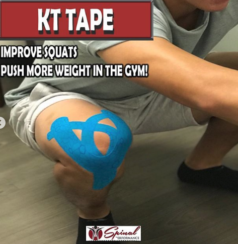
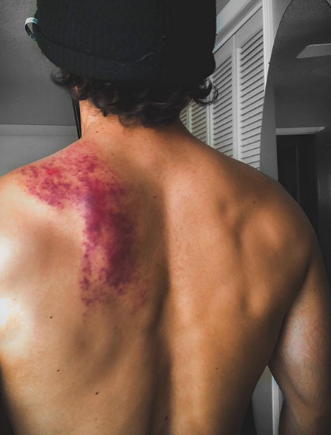
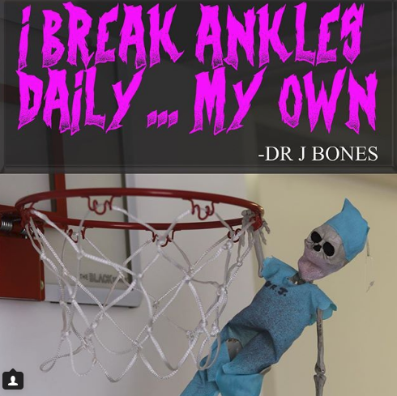
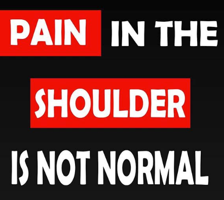
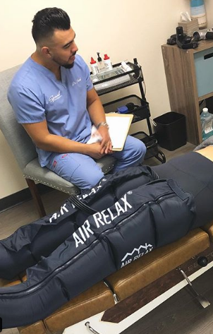
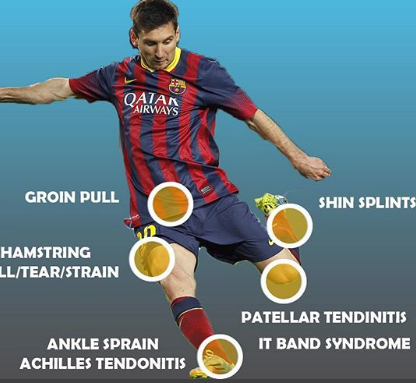
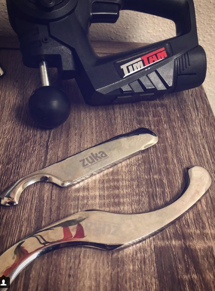
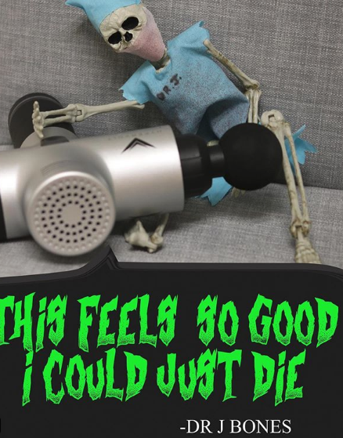

Mobility
Mobility
mobilizing your thoracic spine
Eduardo AndradeOctober 12, 2018When we consider t-spine mobility, it’s important to remember the average adult spends around 45 minutes a day commuting to and from work. Then we spend up to an incredible 11 hours a day on digital media, including activities like watching TV, surfing the internet on our phones, and working on computers.
We usually do these activities sitting down, rounded through the thoracic spine, which can wreak havoc on our posture and put stress on the rest of the body.
In this collection, we’ll take a look at what some of our authors consider important about t-spine mobility, and what they do to help their clients and patients.
read more
<







